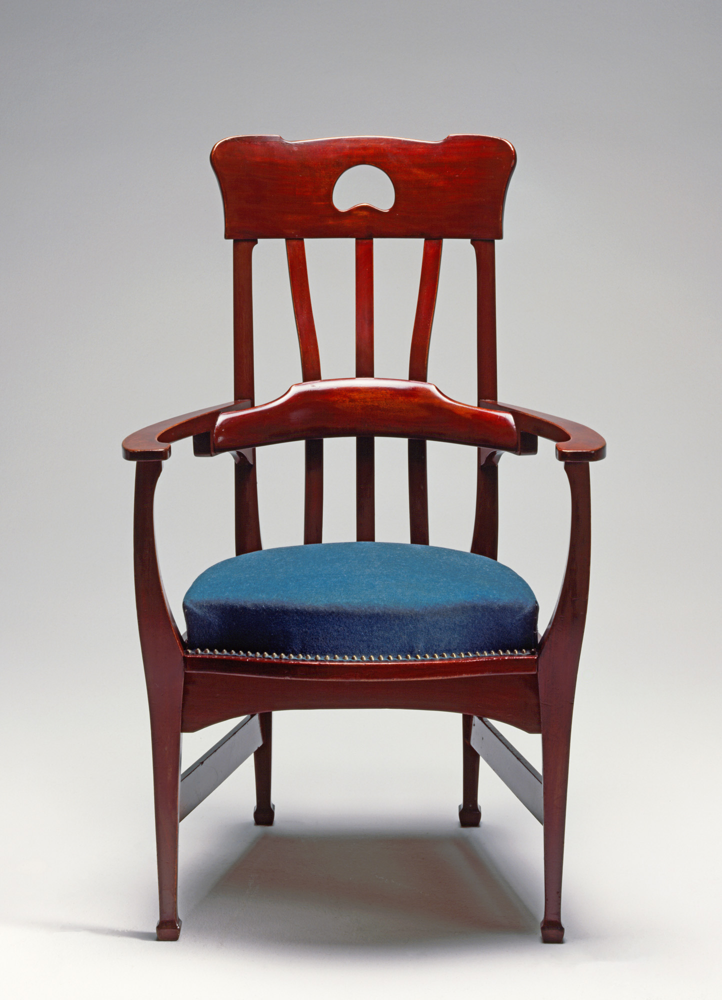

February 27, 2025
Finishing Software
The Art of Handing Things Off
A while ago, I read an interesting blog article titled The Beauty of Finished Software along with the ensuing discussion on Hacker News. The article resonated a lot with me. It makes the point that we can aspire to creating finished software, as in software that is done and not expected to change, and makes the example of Word Star 4.0 as a program that lived up to this expectation1.
There is a romantic notion about software having been properly finished in the good ’ole days. After all, you had to burn your data to disks and distribute them physically, making it a lot harder to ship updates after release. But of course this didn’t prevent bugs from sneaking into release versions, and developers still had to provide updates in the from of point releases on additional CDs or downloadable patches.
The mere fact that real world programs contain bugs makes the idea of finished software hard to imagine. And even if we managed to deal with every last error and all sets of incorrect behaviors, the environment that our software runs in can always change under our feet as the years pass. A better way of thinking about the idea might therefore be the concept of feature-complete software. Still, I think it is worthwhile to explore the notion of finished software further, at least as an aspirational goal to work towards, even if we cannot ever fully reach it.
Dependencies#
If you wish to create an apple pie from scratch, you must first invent the universe.
—Carl Sagan
Recently I’ve visited an exhibition on the Art Nouveau (Jugendstil) scene in Munich at the turn of the 20th century. There were quite a few beautiful pieces of arts and crafts on display. It struck me that you could see e.g. a chair which was created over a hundred years ago and is still completely functional to this day. Granted, it might not work quite the same anymore as it used to, because the materials degraded to some degree. And of course our standards around chairs changed, and with them the affordances we build into the chairs we create today (some of the items on display looked quite uncomfortable). Yet, for the most part it still works perfectly fine as a chair. I find it inspiring to think about the idea that someone created this piece so long ago, was done with it, and now over a hundred years later it is still here to be seen and, at least theoretically, to be used.

Taking a closer look, we can see that even in this case the idea of the chair being finished for eternity doesn’t quite hold up. It is reliant upon a lot of things. On people who keep the chair around in their homes so that it doesn’t end up on a landfill. On tools we use to treat its materials, in order to prevent them from succumbing to excessive humidity, bug infestations and pollution. On people taking care not to break it when using it, and to protect it from excessive wear and tear. Just like it takes a whole supply infrastructure to create a pencil, it takes a whole civilization to maintain a char. In this sense, the central point of the discussion can be applied to pretty much everything. Is there anything that is ever really done? It certainly puts things into perspective. If we think of a 100-year-old chair as being finished, even if it requires all this maintenance to this day, why not take the idea of finished software seriously as well?
Interfaces#
How can we go about getting closer to creating finished software? We need to acknowledge that software doesn’t live in a vacuum, that it always has to run at least on some hardware, and probably also on an operating system.
When I was working on my last game (a real-time strategy game which never took off), I though about this problem as well. How can I create something like a video game today while making sure that it still runs properly years or decades down the road, when software and hardware environments might have changed significantly? (Maybe I should have focused more on the actual game than its legacy…) My conclusion was to code against a stable interface, and to offload the interface implementation to a third party with a vested interest in keeping it alive. I ended up building my game on FNA, an open source re-implementation of the XNA 4.0 API. As long as there are motivated people who want to preserve XNA games in the future, this project is going to be maintained and updated to work with the latest hardware and software environments. If push comes to shove, I can also attempt to fix potential issues in this interface implementation myself, given its open source nature2. As a result, I could hand off my game as finished at some point and it should be able to run for a long time to come.
From this standpoint, the goal should be to keep the interface between our software and the outside world as small as possible. Pulling in 100 small dependencies from NPM is the opposite approach to this. Additionally, we want to be careful about which interfaces we depend on. If our program depends on proprietary systems (in the form of libraries, frameworks, engines, data base systems, operating systems, hardware specifications, etc.), then this is going to make it harder for compatible interface implementations to stay alive for a long time to come. It therefore seems smarter to mostly build upon open source software. For closed source dependencies, it is worthwhile to trace the dependency chain. If we’re building upon a proprietary library which itself only has dependencies to a few open source projects, then it might be possible to reduce the maintenance of the higher order dependency to the maintenance of the lower order dependency. That’s certainly a better deal than proprietary software all the way down.
But it doesn’t stop here. How exactly does our software interface with its dependencies? If we’re dynamically linking against a library, we’re reliant on that library being available in the environment. If we’re statically linking instead, it is going to be much harder to swap out the dependency in the future. This is presumably the reason that the authors of SDL are so adamant about providing a way to dynamically link against the library. As a matter of fact, their approach can serve as a worthy role model here. Developers are encouraged to dynamically link against SDL. However, the authors acknowledge that one might not want to distribute the DLL alongside one’s executable. Therefore, we can statically link against SDL, but then some code is called upon the initialization of SDL which checks for the SDL3_DYNAMIC_API environment variable. If it isn’t set, the program uses the statically compiled version of the library as we would expect. However, if we set it to point to an SDL DLL file, the program is going to dynamically link against that during runtime instead. In many ways, this seems like the ideal solution: Statically link in order to not have to ship the library alongside your program, but make it possible to swap out the library through some mechanism when necessary.
Ideally, the interfaces we are building against are codified in a clear and unambiguous manner, possibly even in the form of a standard. The C language standard has ensured that there is a steadfast common reference for adversarial actors to orient themselves towards3. This does in fact mean that you can run C code from 1989 to this day, which seems like quite the achievement! If standardization isn’t feasible, it makes sense to at least document interfaces as clearly as possible, such that other people can create alternative implementations should the current one be no longer maintained.
Incentives#
On the point of closed source dependencies, we can see that the business incentives around creating proprietary software go against our very goal. It is not necessarily in the interest of a company making money from a piece of middleware to enable third parties to create alternative implementations4. But even when someone is not primarily motivated by financial success, it can be beneficial to everyone involved to not cause unnecessary fragmentation. Creating dozens of incompatible variations of an interface at the cost of combined efforts towards one goal doesn’t help our case either (take all the slightly different versions of grep as an example). As always, the dynamics of these situations are complicated and require a lot of careful thinking before jumping to conclusions. While interfaces in the form of (de facto) standardized protocols seem to have a longer shelf life than ad-hoc APIs, even these aren’t safe from potential issues. For example, some implementations of the Language Server Protocol use extensions that aren’t defined in the official specification (e.g. clangd), and of course someone might also just choose to not fully implement a standardized interface in the first place (see C support in Clang).
There is a danger when going down the road of maximum software longevity to ignore the human component of the dynamics involved. Even the dead, cold bureaucracies of standard committees are ultimately made up of real human beings who might be driven to push an interface one way or the other, or—God forbid!—to deprecate old versions that our software relies upon. We therefore run into the same problem that lies at the heart of artificial preservation in general. Just like Riemerschmid’s chair can only be seen at an exhibition in 2025 because an industrious group of people have bent over backwards over the course of a century to prevent it from being destroyed, it requires a sufficient number of motivated people who actually care enough about our software working correctly to invest their time and resources into making it work. These things can’t happen automatically through mere technology. The best way to ensure a long life for our software is therefore to create something which people go out of their way to use. There is probably always going to be a way to play Doom on any conceivable electronics device with something resembling a display, but who cares about some shovel ware asset flip released on the Steam store ten years ago? Without providing actual value to other people, the idea of preservation is dead in the water.
In the end, we have to balance our approach. It makes sense to control our dependencies in order to make it easier for ourselves and others to make our software run in environments it wasn’t designed to be used in. But we ultimately cannot control the fate of our creation, and have to give it up into the hands of our fellow human beings who inherit it from us once we’re no longer around.
As the discussion on Hacker News alluded to, this example ends up falling short of the aspirations of finished software, because Word Star did in fact end up getting multiple version updates that not only added support for more modern operating systems, but also a lot of additional features which hadn’t been present in the 4.0 version. The point, however, is that George R. R. Martin successfully uses the old version to this day to write an internationally acclaimed fantasy saga. At least for him, Word Star 4.0 might as well be considered finished (unlike his own works of fiction…).↩︎
In reality, this oftentimes isn’t easily possible because the competences around using an interface might differ significantly from the ones around implementing said interface. In the context of the example, I might be reasonably competent at creating a game, but not at creating a cross-platform game development framework.↩︎
Compiler developers have an incentive to abuse every piece of undefined behavior in the standard to their advantage, enabling further optimizations. Other developers have an incentive to treat the language as being as well-defined as possible, to prevent bugs due to holes in the specified behavior. The standard committee has an incentive to keep the standard loose enough to support various different hardware platforms which might not conform to the expectations of the vast majority of developers. The latter part was probably more relevant in the past, before CPUs largely converged towards the same core design decision (around e.g. data type sizes, floating point representations and word sizes). At this point, it’s more like CPUs follow the C standard, rather than the C standard following the available CPU architectures.↩︎
This is a simple but somewhat limited argument, as it assumes a certain myopia on part of the company and its customers. If the fact that there aren’t any competing implementations of an interface factors into a potential customer’s decision about whether to use a product or service, then it may very well be in the interest of the company to enable competing implementations, at least theoretically. After all, nobody likes to take on the risk of being tied to a specific company as a business partner. Of course this opens the doors to playing games around this commitment. It might be better to only make it possible to create such an alternate implementation in principle, whereby it is actually impossible to maintain an alternative in a way that makes sense for long. Down the rabbit hole of game theory we go…↩︎